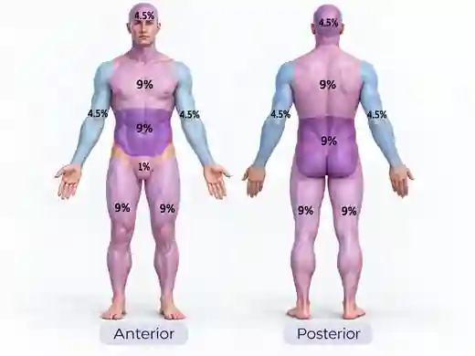

Regla de los 9
de Wallace
Adultos · estima la superficie corporal quemada en segundos. Selecciona únicamente regiones con quemaduras de espesor parcial o total.
01 / Guía anatómica visual

Tu imagen de referencia se muestra para consultar los porcentajes; utiliza los botones inferiores para seleccionar las regiones afectadas.
02 / Regiones quemadas
Toca una región para incluirla; vuelve a tocar para quitarla. Cada región supone afectación completa de esa superficie: si la quemadura es parcial dentro de una zona, requiere una estimación más fina.
SCQ estimada
0 regiones seleccionadas
No hay regiones seleccionadas.
Marca las zonas afectadas para obtener una estimación inicial.
Lesiones irregulares o parciales: considerar método palmar o Lund-Browder. La herramienta no establece indicación de líquidos, traslado ni alta.
Fuentes: American Burn Association, Burn Referral Guidelines; Minnesota Department of Health, TBSA. Herramienta educativa y de apoyo al juicio clínico. No introduce ni transmite datos de pacientes.